Histostick™

Each column is one series: an office, a city, a kind of day. The bars show how many values fall in each band, the vertical line runs from the smallest value to the largest, and the dashed line marks the median. Columns can be reordered, grouped, or combined from the menus above each chart, and the year slider narrows it to a span of years.
The charts below show what the chart can do. Accuracy is not their point: the numbers are approximate and are not offered as findings or advice.
Fictional data
Offered by 4STREET
4STREET is designed to bring Market Intelligence, Regulatory Compliance, while ensuring IP & PII is protected under the most sophisticated Agentic Workflows for Asset Managers and other heavily regulated firms.
Histostick grew out of 4STREET's charting of enforcement data. The code is open under the MIT licence and is provided as is, with no warranty of any kind. The data shown here comes from public sources, except the chart marked fictional, and is for illustration only. Histostick is a trademark of 4STREET; the Histostick and 4STREET names and the logo are not covered by the licence.
its4street.com contact@its4street.com Source code Structured data